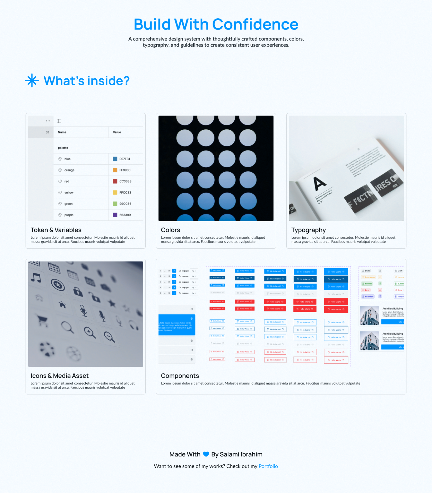

-
Syska Design System
A comprehensive design system built for designers with over 40 thoughtfully crafted components, colors, typography, and guidelines to create consistent user experiences.
-
Project Duration
3 Weeks
-
My Role
Product Designer
-
Tools used
Figma, Token Studio